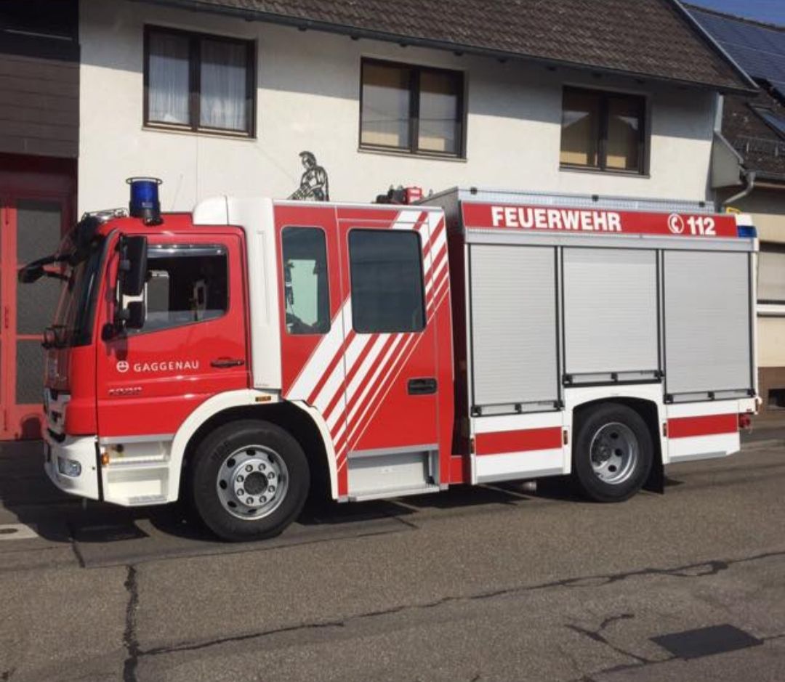
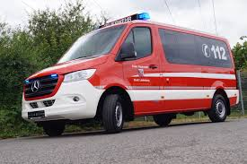

Über uns
| Fahrzeuge | Informationen |
|---|---|
|  |
Name: Löschfahrzeug (LF)
Ein paar Informationen:
Das LF ist ein Fahrzeug, das bei einem Löschangriff oder bei einem Verkehrunfall ausfährt. Es bietet Platz für eine Gesamte Besatzung von 9 Leuten. |
|  | Name: Mannschaftswagen (MTW) Das MTW ist ein Fahrzeug, welches in erster Linie zur Personenbeförderung eingesetzt wird, auch um Material zu transportieren bzw. unseren Anhänger zu ziehen.Zur Verkehssicherung eignet sich dieses Fahrzeug ebenfalls.Der Mercedes Sprinter wurde in Eigenregie zu einem Feuerwehrfahrzeug umgebaut und hat 9 Sitzplätze.Die Beladung beschränkt sich auf diverse Absperrutensilien und einen Erste Hilfe Koffer. |
Mehr Informationen über weitere Feuerwehrfahrzeuge findest du hier.
Da wir nur eine sehr kleine Feuerwehr sind, in einem Dorf mit gerade einmal 1000 Einwohnern brauchen wir nicht mehr als diese 2 Fahrzeuge. Wenn es doch einmal zu einem größeren Einsatz kommt, kommen uns die Feuerwehren aus der Umgebung unterstützen, meist sind das die Feuerwehren aus Bischweier oder Gaggenau. Hier kommst du zur Abteilung Gaggenau Unsere Feuerwehr setzt sich aus einer Jugendfeuerwehr mit 12 Personen zusammen und einer aktiven Mannschaft von 10 Leuten. Natürlich gibt es noch die Altersmannschaft. Man muss jedoch sagen. dass unsere Jugendfeuerwehr immer kleiner wird, da langsam alle alt genug für die Aktive werden. Wenn du dann Teil einer Feuerwehr bist, kriegst du natürlich auch deine eigene Uniform, zu dieser gehört:
- Helm
- Sommerausrüstung
- Winterausrüstung
- Handschuhe
- Einsatzschuhe
Das war nur eine kurze Übersicht wie es bei uns aussieht. Wenn du weitere Informationen zu deiner Feuerwehr Karriere möchtest, schau am Besten mal hier vorbei:Zur deutschen Jugendfeuerwehr